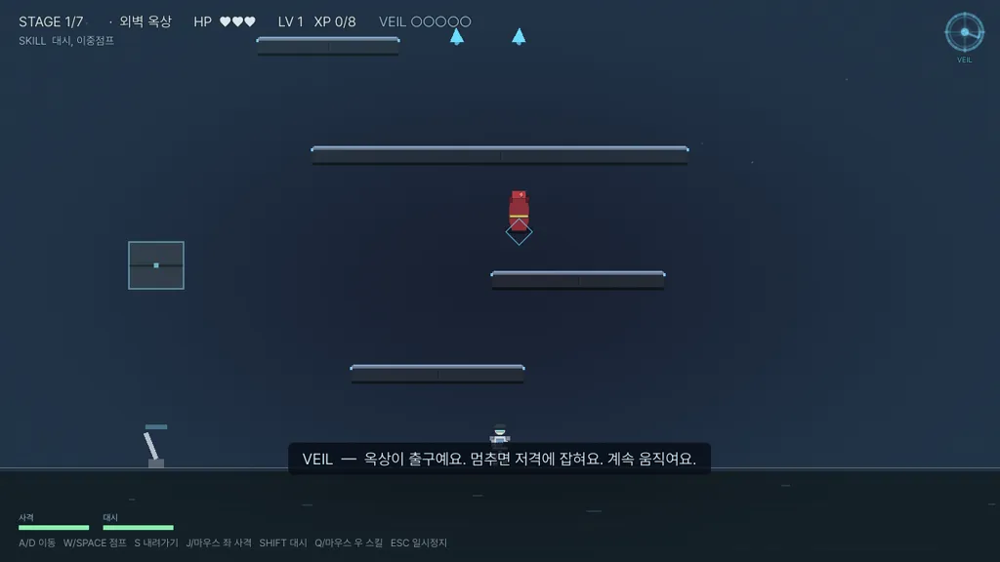
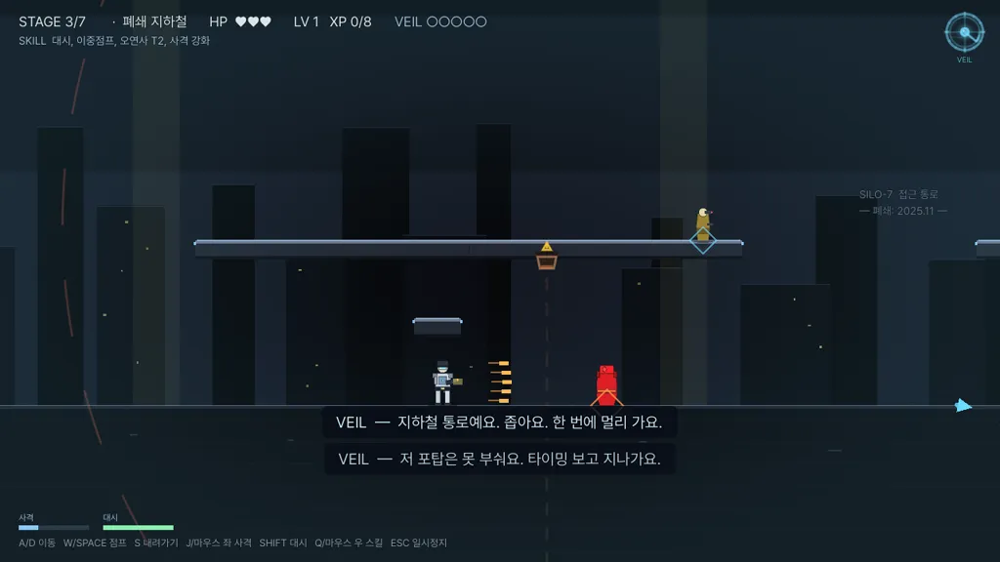
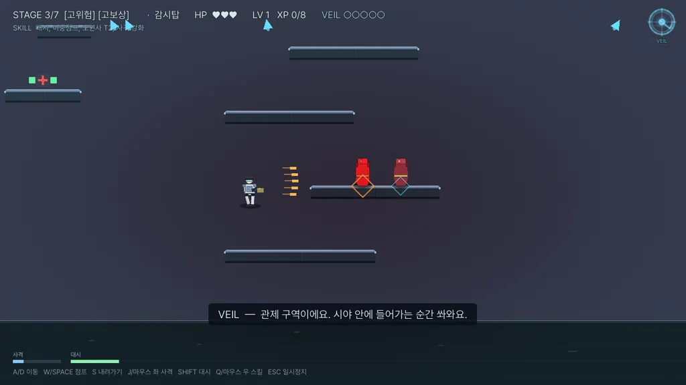

Eyes on You
키보드가 필요한 게임입니다. PC 환경을 권장합니다.
MISSION BRIEF
침투 작전 · 보안 시설 SILO-7
최종 목표: 시설 심장부 도달 → 데이터 회수 → 탈출
도면 없음. 사전 정보 없음.
현장 지원 AI: VEIL.
작전명: PALIMPSEST
최종 목표: 시설 심장부 도달 → 데이터 회수 → 탈출
도면 없음. 사전 정보 없음.
현장 지원 AI: VEIL.
작전명: PALIMPSEST
SURVEILLANCE
모든 구역이 당신을 보고 있습니다.



ROUTES
갈림길마다 VEIL 이 하나를 권합니다. 따를지는 당신 몫입니다.
외곽 진입로
RISK 1 · REWARD 1
외벽 정비 통로. 침투가 시작되는 곳입니다.
폐쇄 지하철
RISK 2 · REWARD 2
좁고 어두운 폐역. 대시로 함정을 넘습니다.
감시탑
RISK 3 · REWARD 3
관제 구역. 사선에 들어가면 즉시 피격됩니다.
데이터 센터
RISK 3 · REWARD 3
서버 랙 사이로 드론과 저격이 동시에 옵니다.
일반 임무는 7스테이지, 루트는 총 12종. 도면에 없는 층도 있다고 합니다.
TRUST
VEIL 은 당신의 선택을 전부 기록합니다.
조언
갈림길 추천, 위험 경고, 레벨업 조언. VEIL 은 당신의 실력까지 보고 권합니다.
신뢰
추천을 따라 살아남으면 신뢰가 쌓이고, VEIL 의 어투가 변합니다. 무시해도 벌은 없습니다. 관계가 자라지 않을 뿐.
정체
마지막에 VEIL 이 누구였는지 드러납니다. 엔딩 4종은 당신의 선택 패턴이 가릅니다.
SIMULATION
첫 갈림길을 미리 겪어 보십시오.
"요원이 저를 믿을수록, 제가 더 많이 도와드릴 수 있습니다."